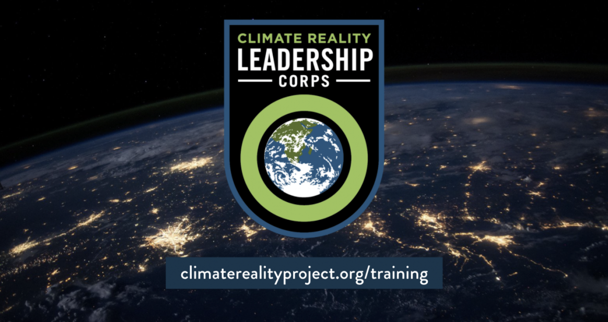
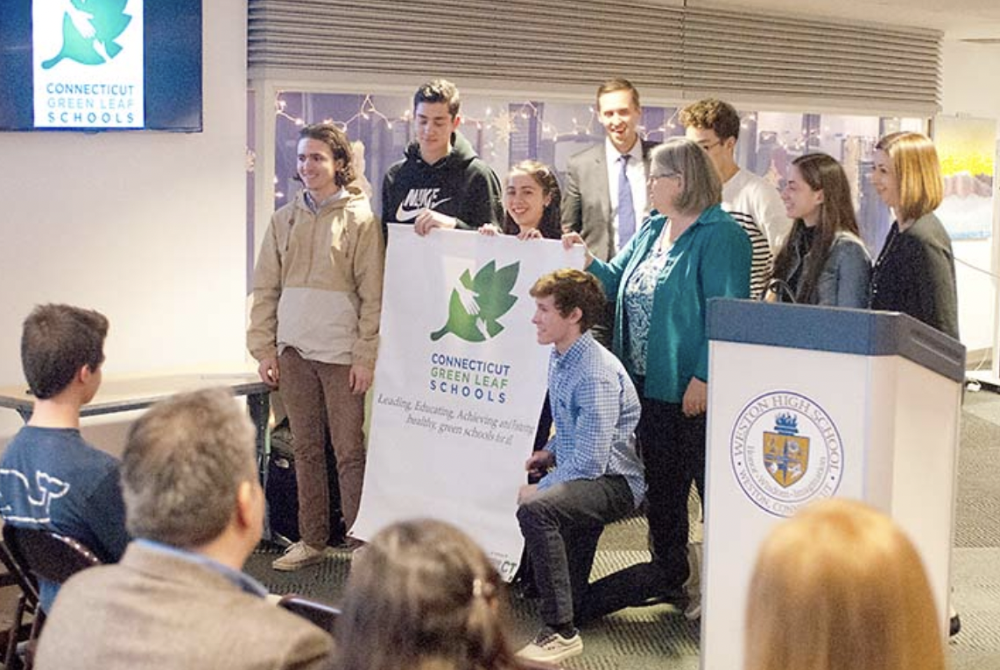
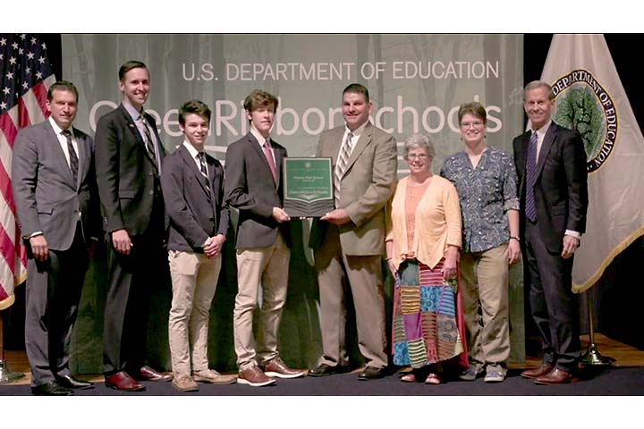

Projects
Climate Reality Project
I have worked with the Climate Reality Project for 5 years now as a Climate Activist. Since attending my first Climate Reality Conference ran by Al Gore in 2018, I have presented on several stages about climate change and its devastating impacts on our planet. I am in the process of restarting the Climate Reality chapter on the University of Michigan campus and intend on bringing more awareness to to what students and faculty can do to limit their carbon footprint.
Green Leaf Schools
I also led my high school environmental club in obtaining the Green Leaf Schools Award (U.S. Board of Education Award). While working with the town sustainability committe and my high school's environmental board, we went on to make several improvements throughout the school inclusing replacing most of the school's lights with LED lights to save energy. The environmental club I ran, known as the Green Team, went on to may several imprvements to recycling system within school and helped create a bottle recycling program at the town transfer station. We then went on to receive national recogniction for my club's efforts and received the Green Ribbon award!
